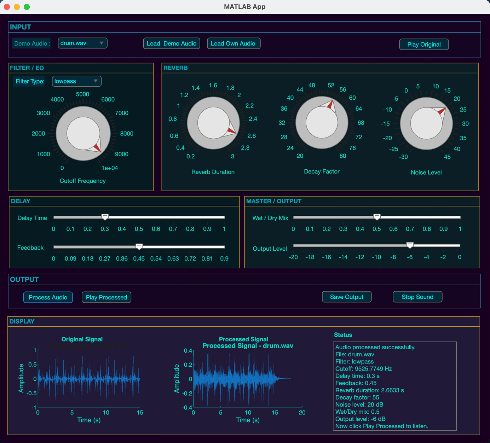

Multi-Effect Audio Processor
一个用 MATLAB 实现的多效果音频处理系统：低通/高通滤波、反馈延迟、卷积混响与湿/干混合， 串联成完整的数字信号处理链路，并用 App Designer 封装成带界面的桌面应用。
系统设计
输入音频依次经过六个处理阶段：预处理归一化，将信号幅度缩放到 ±1.0；FIR 滤波/EQ， 用 512 阶 fir1 设计低通或高通滤波器；反馈延迟，把延迟时间换算成采样点数 （delaySamples = round(delayTime × fs)）后写入未来的采样位置；卷积混响，用白噪声 乘以指数衰减曲线生成一段"人工冲激响应"，再与原始信号做卷积；湿/干混合，按 output = (1 − mix) × dry + mix × wet 线性叠加处理前后的信号；最后再做一次归一化， 避免削波。
核心算法
滤波
滤波阶段用户可选低通或高通，截止频率先归一化到奈奎斯特频率（fs/2），
再用 512 阶 fir1 设计对应的 FIR 滤波器：
norm_cutoff_freq = cutoff_freq / (fs / 2);
b = fir1(512, norm_cutoff_freq, 'low'); % 或 'high'
y = filter(b, 1, x);混响
混响不是调用现成的库函数，而是自己实现的简化卷积混响：用白噪声乘以一条 指数衰减曲线，模拟出一段"人工冲激响应"，再把它和输入信号做卷积，得到 拖尾的混响尾音：
decay_curve = factor_value .^ (-t / samples); % 指数衰减曲线
decaying_noise = white_noise .* decay_curve; % 人工冲激响应
outsig = conv(insig, decaying_noise); % 卷积应用界面
用 MATLAB App Designer 搭建了图形界面：可以选择内置 demo 音频或加载自己的 WAV 文件，实时调节滤波截止频率、混响时长/衰减/噪声电平、延迟时间/反馈量、 湿干比等参数，处理完成后可以直接对比处理前后的波形并播放/导出。

效果对比
| 场景 | 关键参数 | 音频对比 |
|---|---|---|
| 鼓点 Drum | Delay Time = 0.35s Feedback = 0.60 |
处理前
处理后
|
| 钢琴 Piano | Reverb Duration = 1.5s Decay = 55 |
处理前
处理后
|
| 背景音乐 BGM | 低通 5000Hz + Delay + Reverb 完整链路 |
处理前
处理后
|